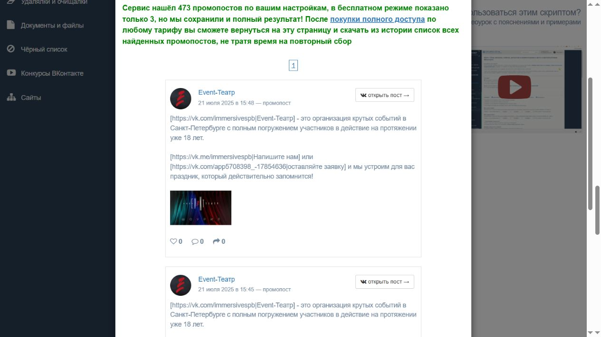
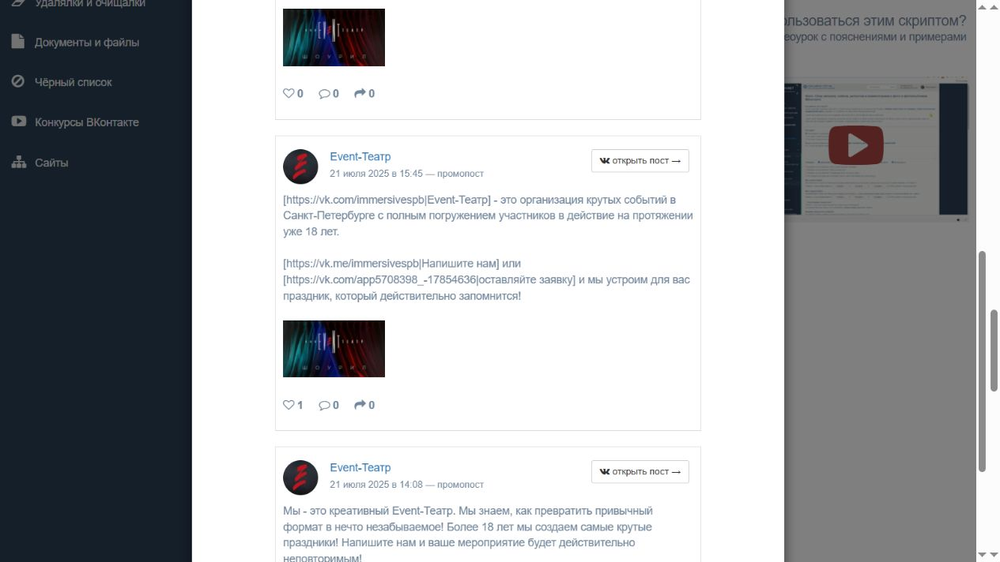
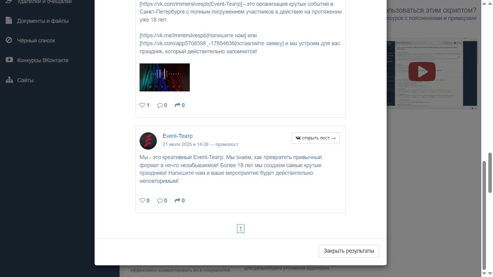

Пост в своей группе
Компания публикует кейс, товар или акцию у себя. По одному такому посту нельзя установить, покупала ли она рекламные показы. Fresh Vision и MF Group из прежнего разбора полезны как портфолио и подача услуг.
СПЕКТР · РЕКЛАМНЫЕ ОБЪЯВЛЕНИЯ ВК
Разобрали 15 рекламных публикаций: предложение, адресата, место размещения и следующий шаг для клиента. Из них можно взять идеи сообщения. Выбрать окупаемую площадку по этим данным пока нельзя.
12 внешних размещений: снимки 28.10.2026 · 3 исторические записи Event-Театра: 21.07.2025 · повторная проверка 02.11.2026
Лучше всего разобран путь «вот что делаем → вот условия для партнёра → напишите за расчётом». Для техники это идея собственного сообщения, а не доказанный результат конкурента. Среди 15 проверенных записей нет прямого прокатчика звука, света или LED. Это граница выборки; она не доказывает отсутствие такой рекламы в ВК.
Как и зачем проверяли ↓ · 12 внешних размещений ↓ · 3 промопоста ↓ · Следующий шаг для «Спектра» ↓
Искали ответы на четыре вопроса: кто предлагает услуги для мероприятий, к кому обращается, чем объясняет ценность и куда ведёт человека после объявления. Отдельно проверяли, есть ли данные о результате. Наша цель — найти обоснованную гипотезу для «Спектра», а не собрать список популярных групп.
Компания публикует кейс, товар или акцию у себя. По одному такому посту нельзя установить, покупала ли она рекламные показы. Fresh Vision и MF Group из прежнего разбора полезны как портфолио и подача услуг.
Чужое предложение появляется у площадки со своей аудиторией. У 12 сохранённых примеров видна пометка «Реклама от автора». Она подтверждает рекламный характер, но не сумму и даже не денежную форму расчёта.
Сервис Barkov показывает ещё 3 записи как «промопост». Это исторические рекламные материалы. Их карточки не раскрывают текущий показ, бюджет, настройки аудитории и места показа.
Адресат ниже определён по тексту объявления: например, «для агентств» или «для классов». Фактический состав аудитории и настройки таргетинга нам неизвестны. Описание своего сообщества не заменяет исследование рекламы.
Сначала исследование шло от списка конкурентов по технике и театру, затем — от отраслевой площадки Event Hunt и городских сообществ Москвы/МО. Это логика поиска возможных заказчиков и подрядчиков. Но доступ к исходным объявлениям получился неравномерным.
| Часть исследования | Что действительно проверено | Граница вывода |
|---|---|---|
| Внешняя реклама | Все 13 сохранённых VK-изображений: 12 отдельных публикаций и 1 главная Event Hunt. Девять публикаций — Event Hunt, две — «Балашиха Life», одна — «Подольск». | Это весь доступный архив примеров, а не весь рынок. Главная группы отдельной рекламой не считается. |
| Поиск промопостов | В сохранённой выдаче по 13 сообществам Barkov заявил 473 записи. Бесплатно показал 3, все — Event-Театр из Санкт-Петербурга. | Остальные 470 не прочитаны. В поле периода стоит «8.05.17»: это исторический поиск, не последний год. |
| Старые журналы | В отчёте 42 записаны 62 рекламных публикации на найденных площадках; в отчёте 49 — 18 результатов Barkov по семи техническим сообществам, включая записи 2023 года. | Полных исходных массивов этих двух подсчётов не найдено. Их нельзя прибавить к 15 заново проверенным записям или назвать действующими кампаниями. |
15 публикаций — это 11 групп по видимому тексту и предложению. IQLAB, создание сайтов и певица повторяются по два раза; у Event-Театра две из трёх записей совпадают по тексту и миниатюре. Ещё три публикации «Шоу Костюм» предлагают разные вещи: образ Эльзы, скидку на наличие и комплект по сказке. Один бренд сам по себе не означает дубль.
Это группировка сообщений, а не 11 уникальных роликов или 11 кампаний. Видео целиком не просмотрены. Отдельные номера и разные ERID у повторов не доказывают ни разные кампании, ни окупаемость повторного размещения.
«Не видно» и «0» имеют разный смысл. В 12 внешних публикациях число реакций читается лишь у двух, число у стрелки «поделиться» — ещё у двух. У восьми числовые показатели в кадре отсутствуют. В трёх карточках Barkov нули напечатаны явно.
Это публичное действие с публикацией. Один лайк не равен одному клиенту. Человек мог прочитать и написать лично, не оставляя реакции; мог поставить лайк и ничего не купить.
74,2 тыс. на архивной главной Event Hunt — подписчики всей группы на 28 октября, а не просмотры объявления. Ни у одного из 15 примеров нет доступной статистики просмотров или рекламных показов.
Неизвестны у всех 15. Поэтому нельзя посчитать цену перехода, цену подходящего запроса, продажи или окупаемость. Сравнение 0 и 1 лайка не выбирает победившую рекламу.
00:54 и 00:44 на IQLAB — время в видеоплеере, 1/5 у парка — номер фотографии. Это не счётчики просмотров. Метрики внешних постов относятся к снимкам 28.10; числа Barkov прочитаны 02.11, частота обновления сервисом неизвестна.
Все три относятся к Event-Театру, Санкт-Петербург, и датированы 21 июля 2025 года. Это ориентир для театрального направления, а не реклама технического проката Москвы. Сервис называет записи «промопостами»; рекламная маркировка и ERID в этих карточках не показаны.

Прочитать карточку сервиса ↗Что и кому предлагают. Предлагают организацию события в Петербурге с участием гостей. Текст обращается к заказчику праздника, но не раскрывает конкретную программу, длительность и цену. Заявление о 18 годах опыта отдельно не проверено.
Куда ведут. Два перехода: сообщение или форма заявки. Это адреса из карточки, работоспособность формы не проверена.
У 2799 и 2800 совпадают видимые текст, миниатюра и переходы. Это две записи одного предложения; ролики целиком не сопоставлены.
Дата записи в сервисе: 21.07.2025, 15:48; часовой пояс не указан. Считано 02.11.2026, период обновления метрик неизвестен.
Исходный URL записи 2800 ↗
Прочитать карточку сервиса ↗Что и кому предлагают. Предлагают организацию события в Петербурге с участием гостей. Текст обращается к заказчику праздника, но не раскрывает конкретную программу, длительность и цену. Заявление о 18 годах опыта отдельно не проверено.
Куда ведут. Два перехода: сообщение или форма заявки. Это адреса из карточки, работоспособность формы не проверена.
У 2799 и 2800 совпадают видимые текст, миниатюра и переходы. Это две записи одного предложения; ролики целиком не сопоставлены.
Дата записи в сервисе: 21.07.2025, 15:45; часовой пояс не указан. Считано 02.11.2026, период обновления метрик неизвестен.
Исходный URL записи 2799 ↗
Прочитать карточку сервиса ↗Что и кому предлагают. Обещают превратить привычный формат в запоминающееся событие. Конкретные программа, цена и участие гостя в этом коротком тексте не раскрыты.
Куда ведут. Призыв «Напишите нам». Отдельного адреса этого действия в карточке нет.
Иная подача того же рекламодателя. Короткий текст сам по себе не доказывает лучшую или худшую отдачу.
Дата записи в сервисе: 21.07.2025, 14:08; часовой пояс не указан. Считано 02.11.2026, период обновления метрик неизвестен.
Исходный URL записи 2798 ↗Почему нельзя продолжить вывод до «успешной кампании». В описании Barkov заявлен поиск универсальных рекламных записей. Это ограничение формата; сервис не даёт нам полного архива всех форматов рекламы ВК, бюджета и заказов. Наличие записи не устанавливает, показывается ли она сейчас.
В архивном поиске бесплатно открыты 3 из заявленных 473 записей. Остальные 470 закрыты полным доступом; платежей не проводили. Цена сервиса на проверенном экране — 599 ₽/день или 1 299 ₽/месяц, это не цена размещения рекламы. Ошибку начальной даты не исправляли новым запуском в этом проходе.
Проверили и альтернативы: в сохранённом журнале AdSpoiler — ошибка входа «Failed to fetch»; TargetHunter требует авторизации и PRO, поиск не запускался. Повторные публичные открытия четырёх адресов ВК 2 ноября не дали содержимого страниц; два точных поисковых запроса о рекламе техники с ERID — без результатов. Эти ограничения не доказывают, что рекламы нет.
Снимок ограничения «3 из 473» ↗ · Полный отчёт и цепочка источников →
Подготовить одно предложение для агентств по технике, отдельное от театра. IQLAB прямо называет агентство, объясняет условия и предлагает простой следующий шаг. Собственный партнёрский пост MF Group из прежнего разбора подтверждает, что такое обращение встречается и у технического подрядчика; его рекламное продвижение не установлено. Это основания проверить подачу, а не обещать её результат.
Кому: агентствам и организаторам событий Москвы/МО. Что: конкретный состав своих работ, фото своего проекта и зона ответственности. Действие: «Пришлите дату, площадку и задачу — подготовим расчёт». Условия и возможности подтвердить до публикации.
Подготовить один рабочий вход в сообщение или форму. Сохранять источник запроса и отмечать: подходит ли задача, подготовлена ли смета, состоялся ли заказ. Для театра сделать отдельную программу, материал и учёт обращений.
До оплаты запросить у выбранной площадки свежие просмотры сопоставимых размещений, аудиторию по географии и профессии, цену и условия. Сопоставить с нашей маржой и допустимой стоимостью подходящего запроса. Только затем обсуждать ограниченный пилот и его правила остановки.
По нынешней выборке нельзя обоснованно выбрать между Event Hunt, городским пабликом и VK Рекламой или назначить бюджет и ожидаемую цену заявки. Платный VK-тест остаётся кандидатом после первого поискового пилота; это порядок проверки гипотез в проекте, а не доказательство превосходства Яндекса над ВК. План поискового направления →
Успех будущей проверки — подходящие запросы, сметы и заказы с известными расходами. Лайки, повторы и число подписчиков помогают описать публикацию, но не заменяют этот результат.
2 ноября заново просмотрены все 13 изображений внешней рекламы и четыре снимка Barkov, сверены реестры и исходная выдача. Свежие объявления, статистика кабинетов и реальные сделки конкурентов недоступны. URL и тип перехода читаются из снимков; успешное открытие конечных страниц и отправка форм не подтверждены.
Для продолжения нужен корректный сбор за выбранный период с полными карточками и исходными URL. Для оценки экономики — собственный тест с расходами и учётом обращений. Чужие расходы/лиды нельзя восстановить из публичного лайка или купить вместе с доступом к парсеру.
Полный разбор, исправления старых выводов и список источников → · Машиночитаемый реестр 15 записей → · Отдельный разбор собственных сообществ →
Портфолио, частота собственных публикаций и шапки восьми сообществ — отдельный слой исследования. Они не включены в подсчёт 15 рекламных примеров.
Отчёт о восьми сообществах с доказательствами → · Подробный архив 12 внешних публикаций → · Историческая выдача Barkov →